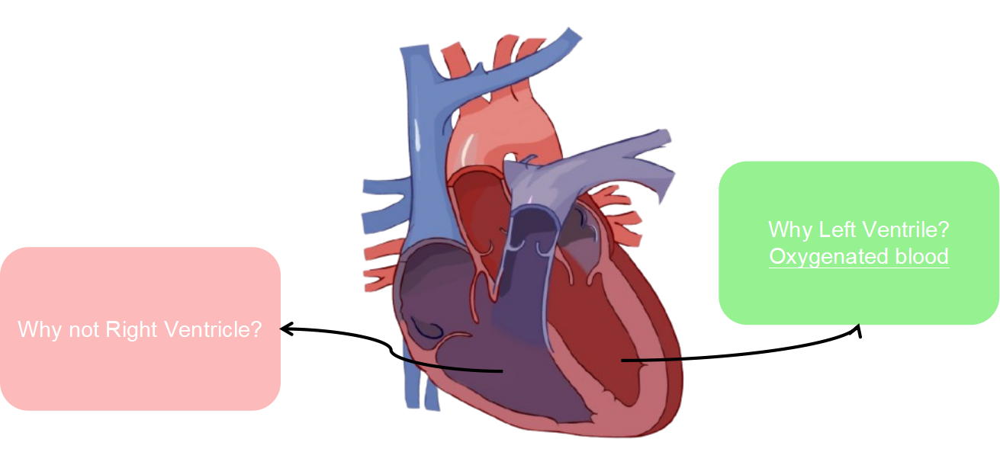
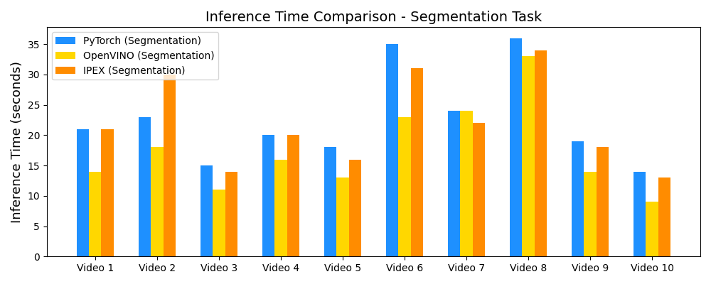
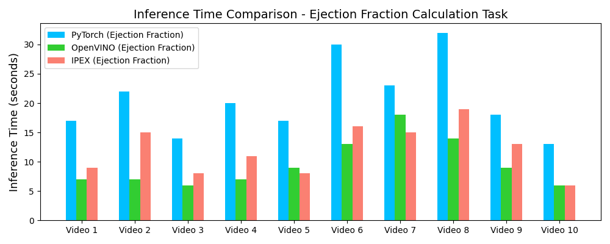
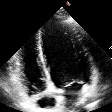
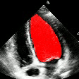
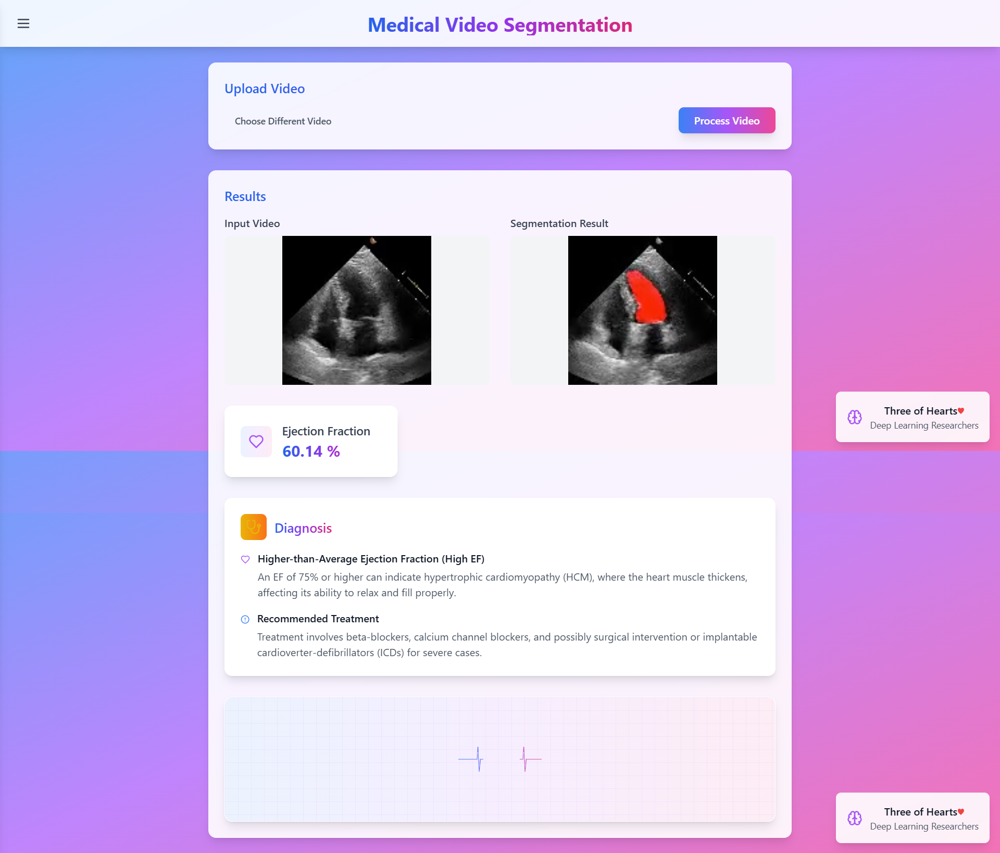

Abstract
The manual analysis of echocardiograms, a cornerstone of cardiac diagnostics, is often a time-consuming process prone to inter-observer variability and error. This project, CardioLens, introduces a robust deep learning framework for the automated segmentation of the left ventricle and subsequent calculation of the Left Ventricular Ejection Fraction (LVEF) from echocardiogram videos. Our dual-task pipeline utilizes a high-performing DeepLabV3 model with a ResNet-101 backbone for semantic segmentation and an R(2+1)D video model for LVEF estimation. A key contribution of this work is the systematic optimization of the entire workflow using the Intel® AI software stack. By leveraging the Intel® Extension for PyTorch (IPEX) for accelerated training and the Intel® Distribution of OpenVINO™ Toolkit for inference, we demonstrate a significant performance increase, including a nearly 50% reduction in inference time on standard Intel® CPUs. The final segmentation model achieves a Dice Score of 0.92, providing a highly accurate, efficient, and accessible solution to augment clinical decision-making in cardiology.
Project Outcomes


Introduction
Cardiovascular Diseases (CVDs) remain the leading cause of mortality worldwide, making accurate and timely diagnosis a critical global health priority. Echocardiography stands as the most widely used non-invasive imaging modality for assessing cardiac function. A key biomarker derived from these scans is the Left Ventricular Ejection Fraction (LVEF) — the percentage of blood pumped out of the left ventricle with each contraction. LVEF is a fundamental indicator of cardiac health and is crucial for diagnosing and managing conditions like heart failure.

Despite its importance, the clinical workflow for LVEF assessment faces significant challenges. Manual tracing by a sonographer is time-consuming and subject to high inter-observer variability. This project introduces CardioLens, an end-to-end automated framework designed to address these limitations through a dual-task AI pipeline that performs both accurate semantic segmentation of the left ventricle and direct LVEF estimation from raw echocardiogram videos, optimized with Intel® AI tooling for CPU deployment.
Methodology
Our methodology is built around a comprehensive pipeline that automates the entire process from video input to diagnostic output, using the EchoNet-Dynamic Dataset — a large, publicly available collection of echocardiogram videos with associated LVEF labels and left-ventricle tracings.

Dataset
The EchoNet-Dynamic dataset from Stanford University was partitioned into three subsets for rigorous evaluation. A substantial 74.4% was allocated for training, while the validation (12.8%) and test (12.7%) sets were reserved for hyperparameter tuning and final evaluation respectively.
The distribution of Ejection Fraction (EF) values across patient videos shows a typical right-skewed distribution with concentration between 50–70%, representative of a real-world clinical population.


Models & Training
Three segmentation architectures were evaluated: the transformer-based Intel DPT-Large model, and two DeepLabV3 variants (MobileNetV3-Large and ResNet-101 backbones). The DeepLabV3 + ResNet-101 was selected for its superior Dice performance. Following segmentation, LVEF is estimated using an 18-layer R(2+1)D video model that learns spatio-temporal features to compute End-Diastolic Volume (EDV) and End-Systolic Volume (ESV):
LVEF Formula
EF = (EDV − ESV) / EDV
Intel Technologies
Training was accelerated with the Intel® Extension for PyTorch (IPEX). For deployment, models were converted to OpenVINO™ Intermediate Representation (IR) format, applying graph pruning, quantization, and kernel fusion — enabling real-time analysis on standard CPUs without requiring specialized hardware.
Experiments & Results
All experiments were conducted on a 12th-Gen Intel® Core™ i7-12650H CPU using PyTorch, TorchVision, Hugging Face Transformers, OpenCV, and the Intel® AI Analytics Toolkit.
Model Comparison
| Metric | Intel DPT | DeepLabV3 ResNet-101 | DeepLabV3 MobileNetV3 |
|---|---|---|---|
| Loss | 0.1419 | 0.0441 | 0.053 |
| Overall Dice Score | 0.5632 | 0.9209 | 0.8836 |
| Diastolic Dice | 0.5707 | 0.9058 | 0.8595 |
| Systolic Dice | 0.5584 | 0.9304 | 0.8994 |
| Time / Epoch (s) | 223.6 | 7.1 | 6.6 |
Training Curves
The plots below show Dice Score and loss progression over 40 epochs for the selected model. Both EDV and ESV Dice scores improve rapidly before stabilising, confirming successful learning of cardiac structure boundaries.


Inference Speedup with OpenVINO™


Demo Outputs


Web Portal

Discussion
Our experiments confirm that CNN architectures like DeepLabV3 + ResNet-101 can achieve expert-level accuracy in left-ventricle segmentation. More importantly, the ~50% reduction in inference time with OpenVINO™ demonstrates that complex AI analysis can run efficiently on ubiquitous CPU hardware, lowering the barrier to clinical adoption. CardioLens can serve as an automated "second opinion", reducing diagnostic errors, improving inter-operator consistency, and integrating into existing PACS systems.
A significant area for future work is extending and validating the framework for pediatric and infant cardiac data, which presents unique challenges due to different heart rates and sizes. We also plan to expand to detect other cardiac abnormalities beyond LVEF.
Conclusion
CardioLens successfully developed and validated an AI-powered framework for automated echocardiogram analysis. By selecting an appropriate deep learning architecture and leveraging hardware-aware optimization with the Intel® Distribution of OpenVINO™, we built a system that is both highly accurate (Dice 0.92) and computationally efficient (~50% inference speedup). This represents a significant step towards practical AI integration in routine cardiology workflows.
Resources
Full technical details, implementation code, and extended results are available below.
References
- Ouyang, D., et al. (2020). Video-based AI for beat-to-beat assessment of cardiac function. Nature, 580(7802), 252–256.
- Leclerc, S., et al. (2019). Deep learning for segmentation using an open large-scale dataset in 2D echocardiography. IEEE TMI, 38(9), 2198–2210.
- Chen, L.C., Papandreou, G., Schroff, F., & Adam, H. (2017). Rethinking Atrous Convolution for Semantic Image Segmentation. arXiv:1706.05587.
- Ronneberger, O., Fischer, P., & Brox, T. (2015). U-Net: Convolutional Networks for Biomedical Image Segmentation. MICCAI.
- He, K., Zhang, X., Ren, S., & Sun, J. (2016). Deep Residual Learning for Image Recognition. CVPR.
- Tran, D., et al. (2018). A Closer Look at Spatiotemporal Convolutions for Action Recognition. CVPR Workshops.
- Dosovitskiy, A., et al. (2020). An Image Is Worth 16×16 Words: Transformers for Image Recognition at Scale. arXiv:2010.11929.
- Knackstedt, C., et al. (2020). Artificial intelligence in echocardiography. Circ. Cardiovasc. Imaging, 13(3).
- Intel Corporation. (2024). Intel® Distribution of OpenVINO™ Toolkit. intel.com
- Intel Corporation. (2024). Intel® Extension for PyTorch. intel.github.io
Contact
For further information or collaboration opportunities:
Nikhileswara Rao Sulake —
nikhil01446@gmail.com ·
LinkedIn ·
GitHub